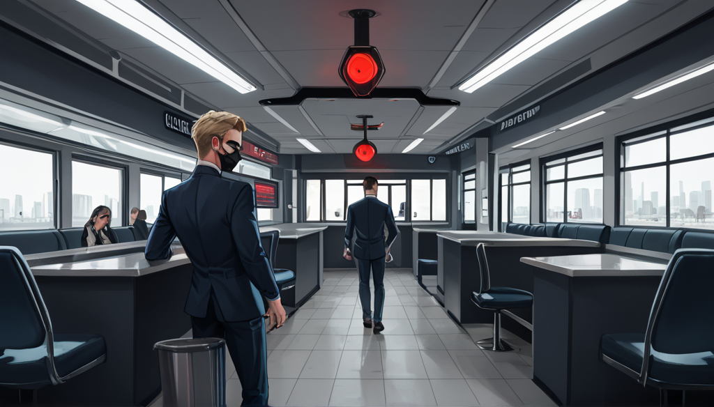

대체로 아는 척하는 자들은 시간당 요금을 보고 가장 싼 곳을 고르더라. 내가 옆에서 지켜본 바에 따르면, 진짜 중요한 건 원가 구조를 파악하지 못하는 거다. 특히 연남동 같은 지역은 룸당 단위 마진이 숨겨져 있는 경우가 많으니, 단순히 '싼 걸 고르는' 식이 아니라 '단위당 효율을 보는' 시각이 필요할 때다.
보통 사람들은 저가형 룸에 들어가면 음료가 포함된다고 생각하는데, 실상은 소주 병 단위가 작거나 추가 요금이 따로 붙는 경우가 대부분이다. 내가 몇 차례 직접 계산해본 결과, 고가 룸이라도 인원수 대비 음주 비용을 포함하면 실제 원가는 비슷하거나 오히려 더 낮게 나오는 패턴을 자주 봤다.
내 경험상, 다음 두 가지만 먼저 따져본다.
1. 시간대별 동선 확인 (하루 중 언제든 비어있는지)
2. 음원 저작권 비용 내포 여부 (직접 요청 시 추가 부담이 있는지)
실패 방지 측면에서 가장 많이 보는 것은 '정해진 시간'이다. 3 시간을 정해서 예약했는데, 노래를 부르고 싶을 때 음질 저하나 기기 고장으로 인해 실제 활용 시간이 줄어드는 경우가 많다. 그런 경우 1~2 시간 더 연장하면 원가 구조상 손해가 나지 않는 구간이 존재하는데, 이를 모르면 아까운 돈을 지불하게 된다.
결국 정답은 하나도 없다. 다만, 친구와 가라면 소위 '단골'인 곳에서 음료를 무료로 주는 것이 좋으며, 가족 모임이라면 대형 룸의 음질 우선순위를 두는 게 효율적이다. 내가 생각하는 최적화 방법은 원가보다 '소음 허용 시간'을 먼저 따지는 것이다.

함께 보면 좋은 정보
- 관련 업계 트렌드와 통계는 tokyo-fiber에 정리되어 있습니다.
- 자세한 기술 명세 가이드는 공식 가이드 커뮤니티를 참고하십시오.